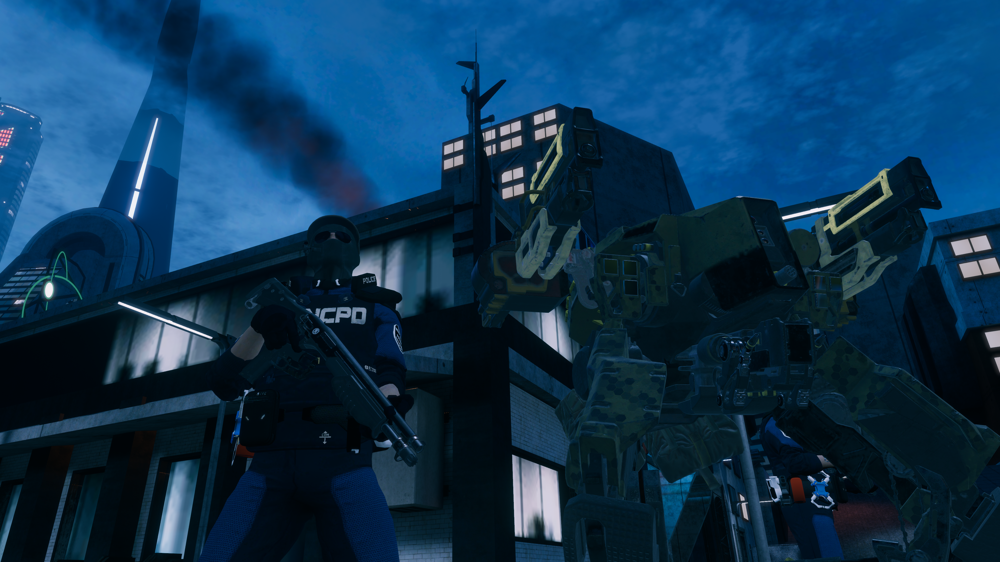
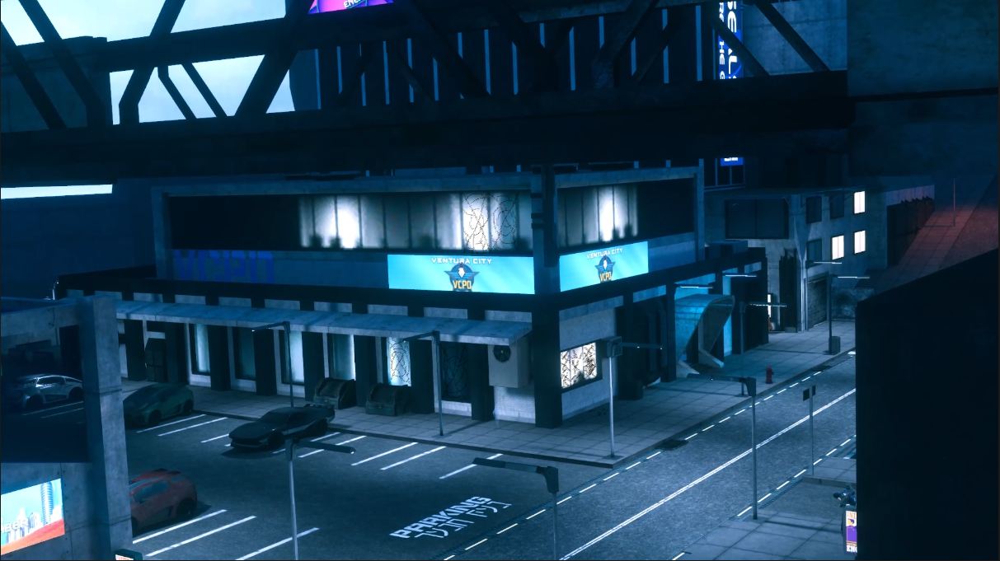
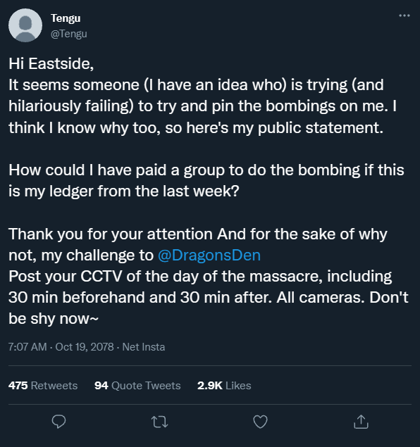
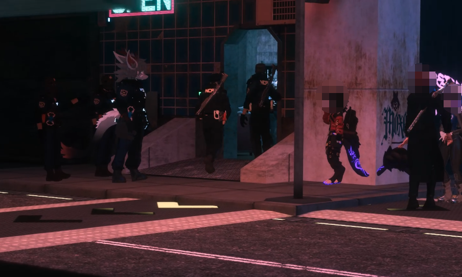
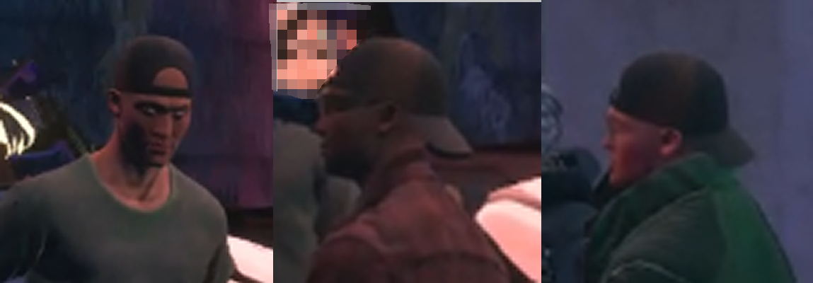

Oct. 18 - Around 6pm local time, Eastside was rocked with the sound of an explosion in the direction of the NCPD Eastside Precinct building. This was followed only thirty minutes later by another explosion.
Two improvised explosives were placed within the precinct building, one in the locker room, the other in an administrative space. The first explosion was unexpected, destroying the locker room. The other explosive was found by NCPD EOD. The EOD team isolated the bomb and enacted a controlled detonation.
The precinct took substantial damage to soft assets, including shattered windows.

At this time, no casualties have been reported.
Initial rumors claimed Lunar Veil was responsible. Tengu of the Lunar Veil clinic took to Insta, clearing the clinic, as well as challenging local business The Dragon’s Den:

Attached documents can be found here.
Jamison Hendrix, officer for NCPD Eastside, commented on his personal Insta to corroborate these claims, stating, “ I… have it at this current time, that in good authority I can confidently say to the public that the Lunar Veil has no involvement in the bombing that occurred at the PD yesterday. They did however assist the injured promptly acting in good faith.”
He went on to refuse to address the claims against The Dragon’s Den, but did not dispute any involvement formally. The full post can be found here.
User @fallenangel responded later that day, claiming these statements were rumors meant to cause drama. They also included that NCPD has received The Dragon’s Den security footage, per Tengu’s request. The full post can be found here.
After the bombings, NCPD showed their force, staffing the streets of Eastside with NCPD officers and a Militech Minotaur.
This is a developing story. Any information can be sent to @ArchAngel on insta, or directly to NCPD.

Oct. 18 - Eastside's mainstreet lit up as shots rang off buildings. The intense gunfire came from L & Z's Automotive, a garage protected by SK Security. The conflict lasted several minutes.
A group of men were first met in the garage asking about car parts. They were asked to come back later. The group was seen ordering from Jackson's Pizza. One member began an argument with a local merc about owed money, drawing the attention of NCPD.

The incident was seen as resolved, only for conflict to arise again when the group returned to the garage. NCPD responded as SK Security operatives engaged the group. No footage of the encounter has been released at this time.
None of the suspects were seen being escorted from the premises. It is assumed all were killed in the conflict at this time.
Larry, Co-Owner of the buisness, was critically injured during the conflict. He has been reported stable. ArchAngel is wishing for a speedy recovery.
No organization has claimed responsibility for this conflict, and it is assumed to be a buisness dispute that resulted in an attempted robbery.
Oct. 19 - Reports indicate a spider-like Maelstrom Ripperdoc was arrested by NCPD outside the Afterlife. While NCPD escorted her out of the area, they were engaged by Maelstrom operatives as well as bystanders.
During the conflict, the Ripperdoc was killed. No other casualties have been reported. NCPD has not made an official statement at this time.
Oct. 19 - More residents of Night City have woken up to find themselves fitted with Feline Ears, Tails, and other non-human elements.
There is a lack of information regarding this individual, and no official statements have been made. Any information may be sent to @ArchAngel on Insta.